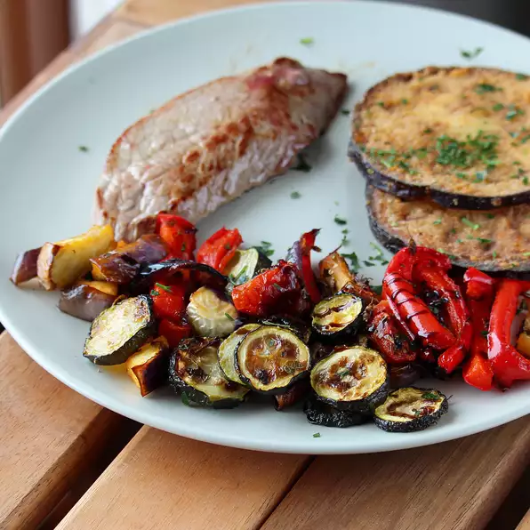

<!DOCTYPE html>

<html lang="en">
    <head>
        <title>Sheet Pan Ratatouille</title>
        <meta charset="utf-8">
    </head>
</html>

<body>
    <h1>Sheet Pan Ratatouille</h1>
    
    <h3>Description</h3>
        <p>Ratatouille is a classic vegetarian French dish that I made in one pan<br/>
             in no time and got the most caramelized and tender vegetables.</p>
    <h3>Ingredients</h3>
            <ul>
                <li>1 large eggplant, cut into 1/2-inch cubes</li>
                <li>2 zucchinis, cut into 1/2-inch slices</li>
                <li>2 heirloom tomatoes, cut in wedges</li>
                <li>1 white onion, cut into 1/2-inch-thick rounds </li>
                <li>1 red bell pepper, cut into 1/2-inch strips </li>
                <li>4 cloves garlic</li>
                <li>2 tablespoons olive oil </li>
                <li>2 tablespoons chopped fresh rosemary</li>
                <li>1 teaspoon salt</li>
                <li>½ teaspoon ground black pepper</li>
                <li>1 tablespoon balsamic vinegar</li>
            </ul>
    <h3>Directions</h3>
            <ol>
                <li><p>Preheat oven to 400 degrees F (200 degrees C).<br/>
                     Line a baking sheet with parchment paper.</p></li>
                <li><p>Place eggplant, zucchinis, tomatoes, onion, bell pepper,<br/>
                     and garlic in a single layer on the prepared baking sheet.<br/>
                      Drizzle with olive oil, rosemary, salt, and pepper; toss<br/>
                       vegetables until well coated.</p></li>
                <li><p>Roast in the preheated oven until slightly tender; about 20 minutes.<br/>
                     Mix and roast for another 12 minutes. Reduce heat to 300 degrees<br/>
                      F (150 degrees C) and cook until vegetables begin to caramelize;<br/>
                       about 10 minutes. Drizzle with balsamic vinegar.</p></li>
            </ol>

</body>